Жили-были старик со старухой.
— Испеки, старуха, колобок.
— Из чего испечь? Муки нет.
— По коробу поскреби,
по сусеку помети —
авось муки и наберётся.
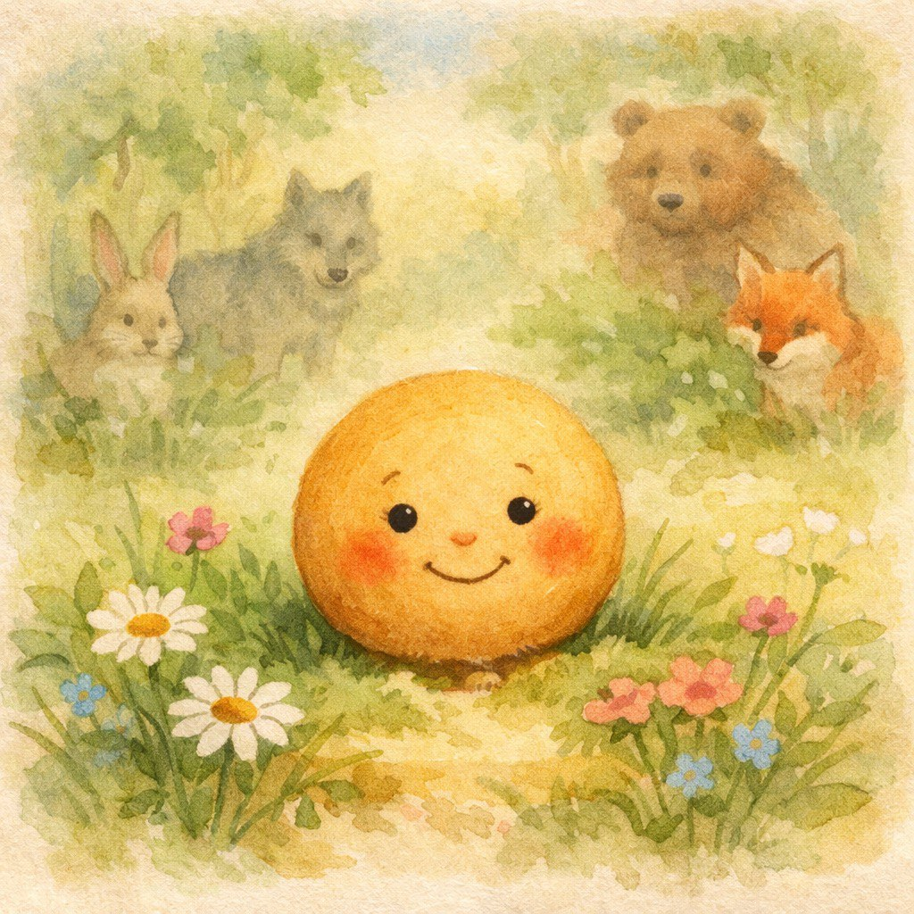
Сказки и потешки
для самых маленьких
для самых маленьких


Старуха по коробу поскребла,
по сусеку помела —
и набралось муки.
Замесила тесто,
пожарила колобок
и положила на окошко остудить.
по сусеку помела —
и набралось муки.
Замесила тесто,
пожарила колобок
и положила на окошко остудить.
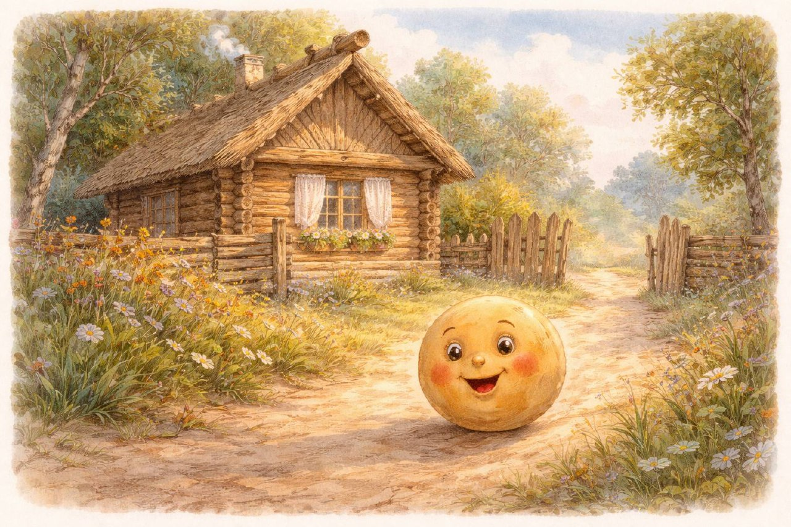
Колобок полежал-полежал
да вдруг и покатился —
с окна на лавку,
с лавки на пол,
по полу к дверям и дальше по дороге.
да вдруг и покатился —
с окна на лавку,
с лавки на пол,
по полу к дверям и дальше по дороге.
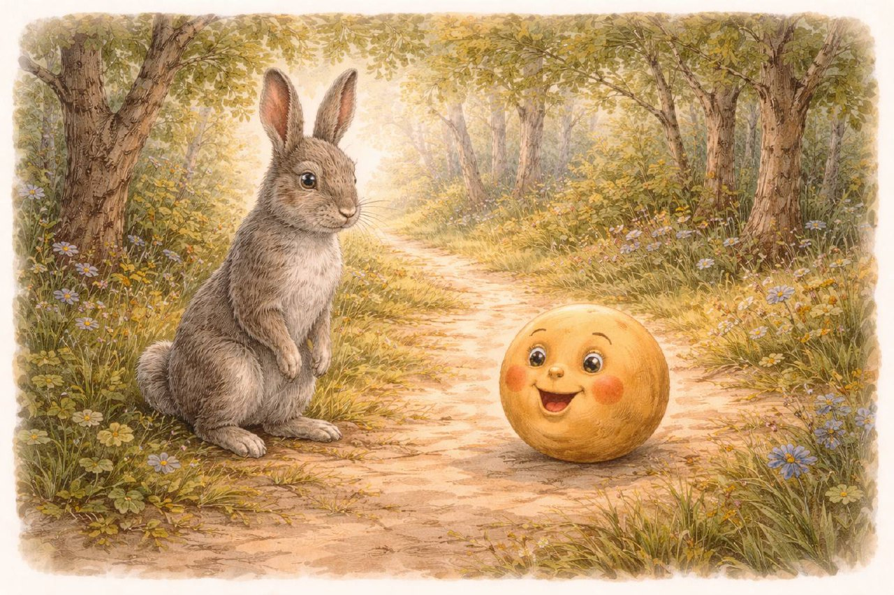
Катится колобок по дороге,
а навстречу ему заяц.
— Колобок, колобок!
Я тебя съем!
а навстречу ему заяц.
— Колобок, колобок!
Я тебя съем!
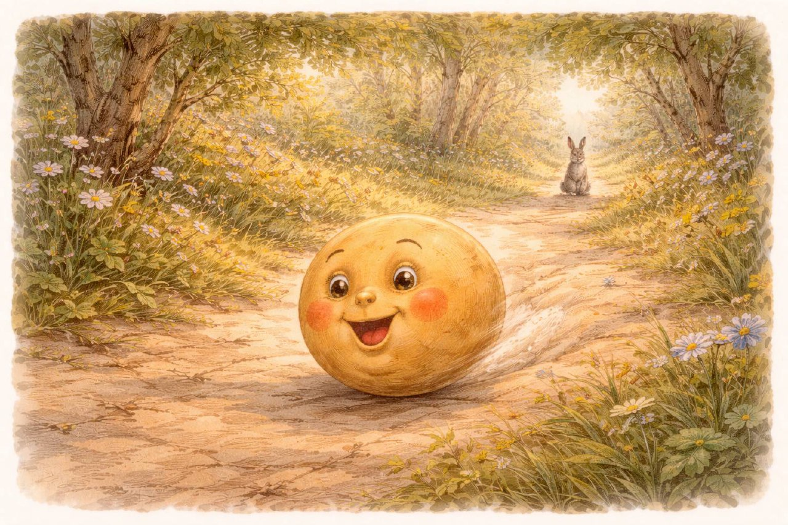
Я по коробу скребён,
по сусеку метён,
на сметане мешон,
в масле пряжон,
на окошке стужон.
Я от дедушки ушёл,
я от бабушки ушёл,
от тебя, зайца, не хитро уйти!
по сусеку метён,
на сметане мешон,
в масле пряжон,
на окошке стужон.
Я от дедушки ушёл,
я от бабушки ушёл,
от тебя, зайца, не хитро уйти!
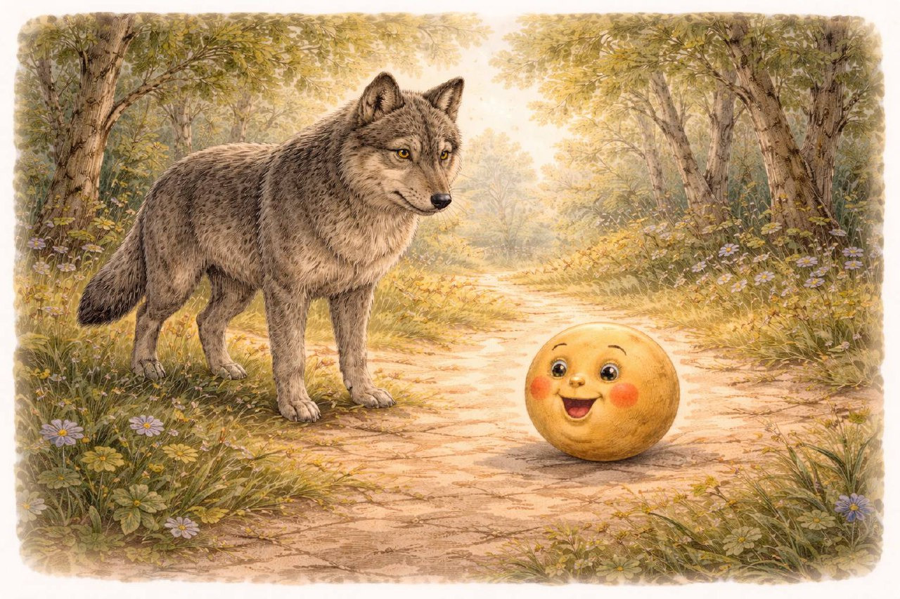
Катится колобок дальше,
а навстречу ему волк.
— Колобок, колобок!
Я тебя съем!
а навстречу ему волк.
— Колобок, колобок!
Я тебя съем!
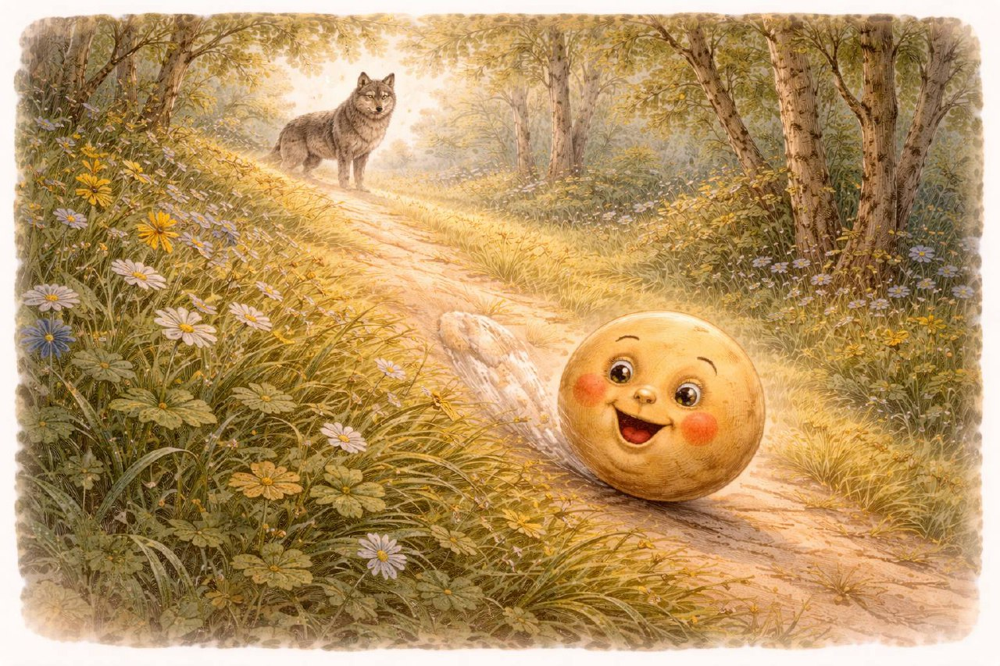
Я от дедушки ушёл,
я от бабушки ушёл,
я от зайца ушёл,
от тебя, волка, не хитро уйти!
я от бабушки ушёл,
я от зайца ушёл,
от тебя, волка, не хитро уйти!

Катится колобок дальше,
а навстречу медведь.
а навстречу медведь.
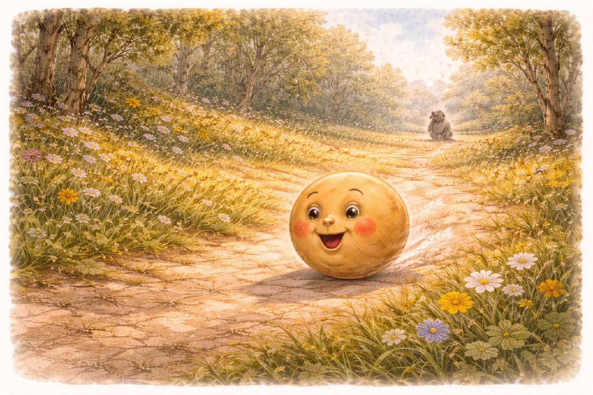
Я от дедушки ушёл,
я от бабушки ушёл,
я от зайца ушёл,
я от волка ушёл, и от тебя, медведь, уйду!
я от бабушки ушёл,
я от зайца ушёл,
я от волка ушёл, и от тебя, медведь, уйду!

Катится колобок дальше,
а навстречу лиса.
а навстречу лиса.
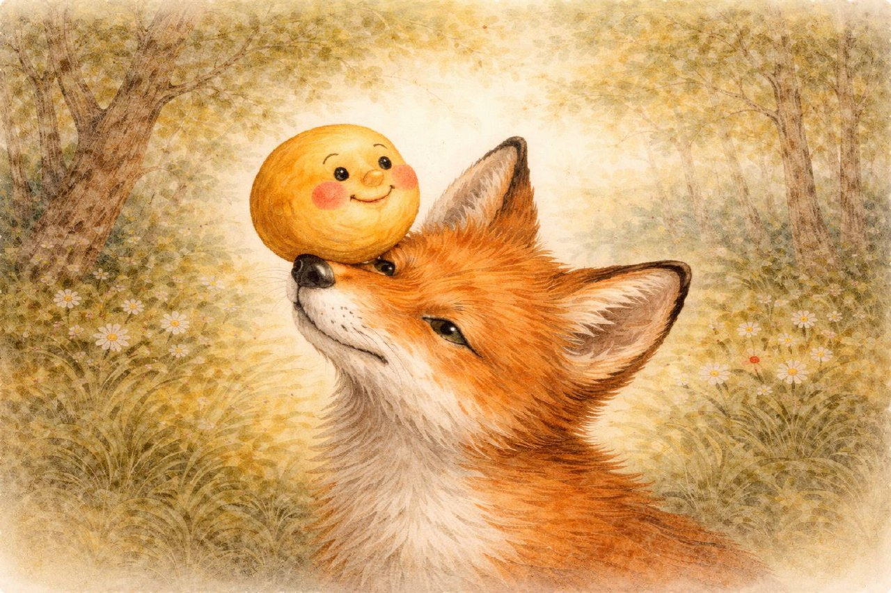
— Какая славная песенка!
Только я плохо слышу.
Сядь ко мне на носок да пропой ещё разок.
Только я плохо слышу.
Сядь ко мне на носок да пропой ещё разок.
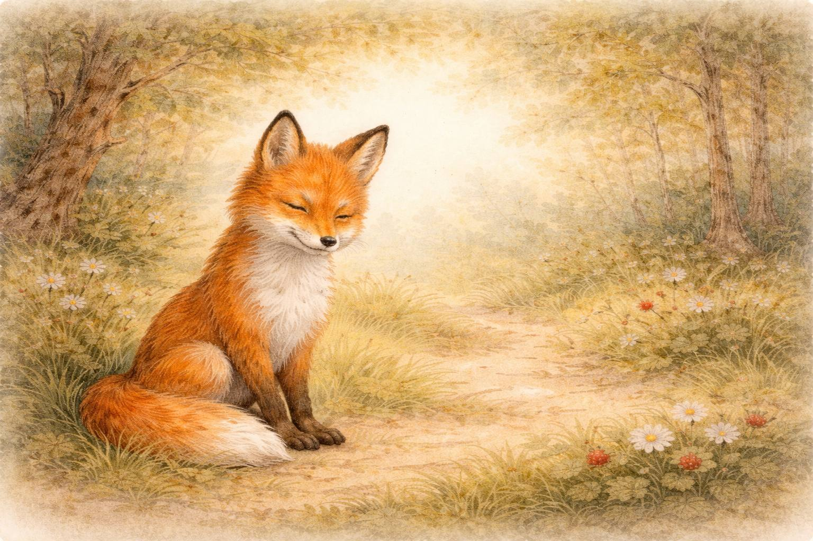
Колобок прыгнул
лисе на нос
и запел песенку.
А лиса — ам! и съела его.
А лиса — ам! и съела его.
Сказки закончились.
А игры и песенки только начинаются.
А игры и песенки только начинаются.
Ладушки, ладушки!
Где были? — У бабушки.
Что ели? — Кашку.
Что пили? — Бражку.
Где были? — У бабушки.
Что ели? — Кашку.
Что пили? — Бражку.
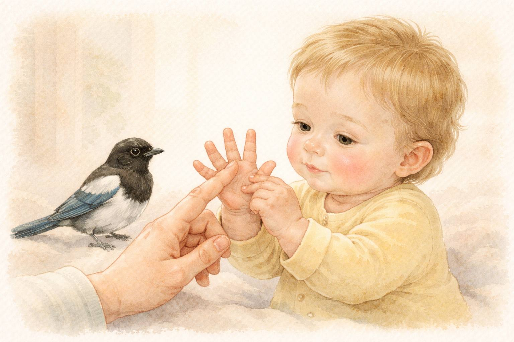
Сорока-белобока
кашку варила,
деток кормила.
кашку варила,
деток кормила.
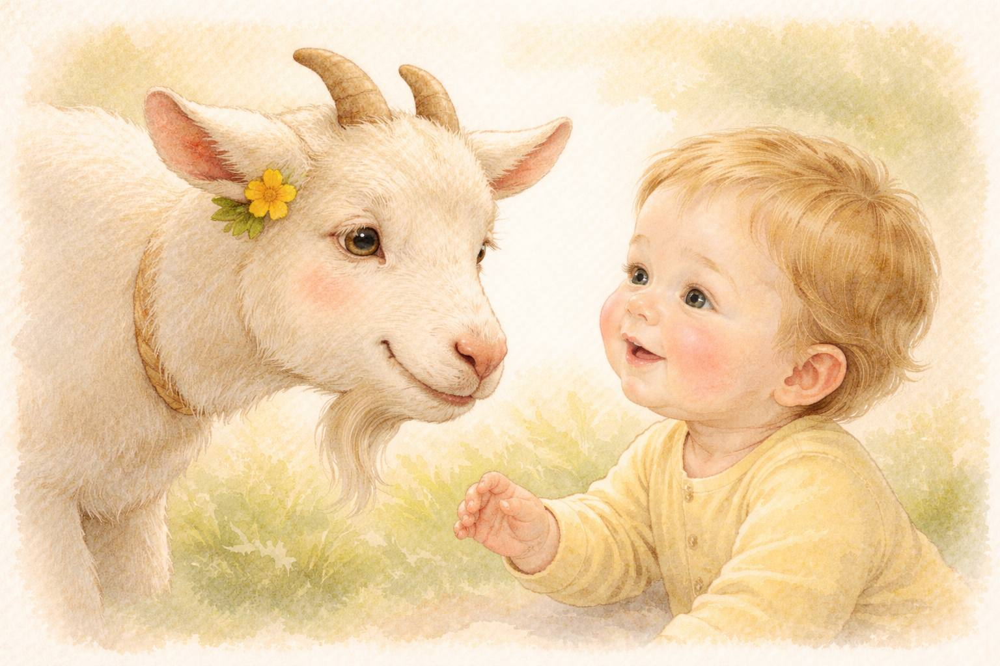
Идёт коза рогатая
за малыми ребятами.
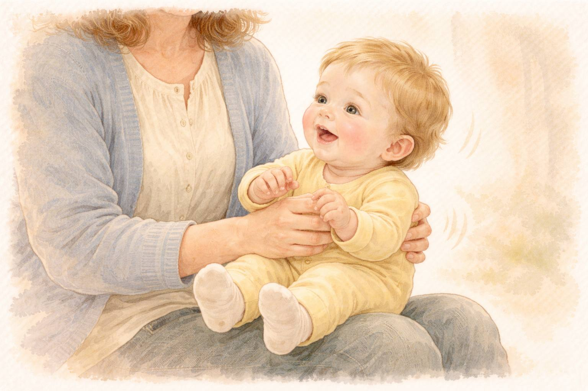
По кочкам,
по кочкам,
в ямку — бух!
по кочкам,
в ямку — бух!
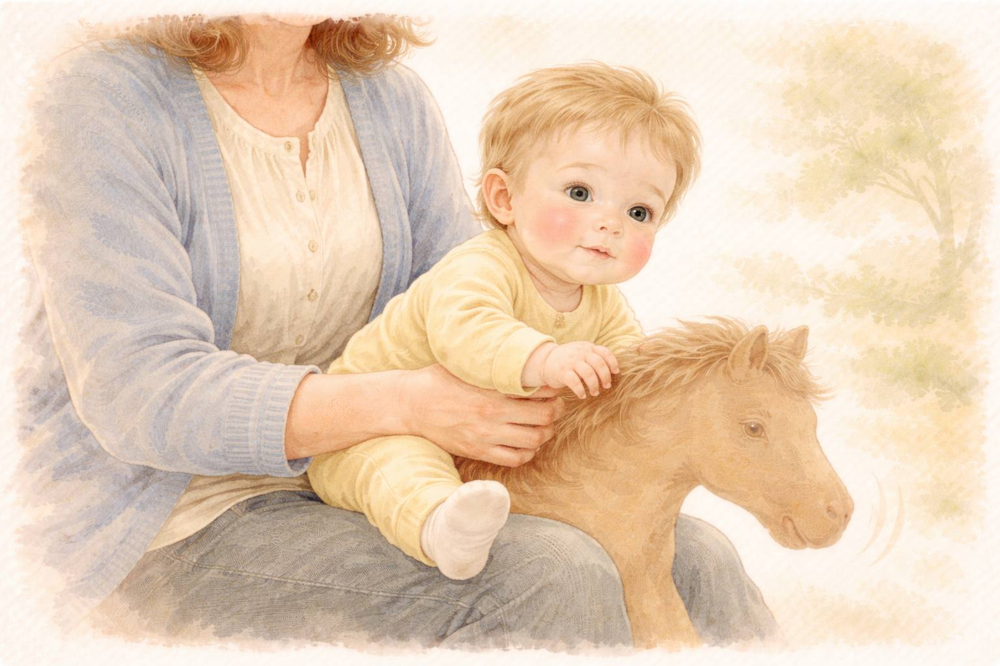
Ехали, ехали
в лес за орехами.
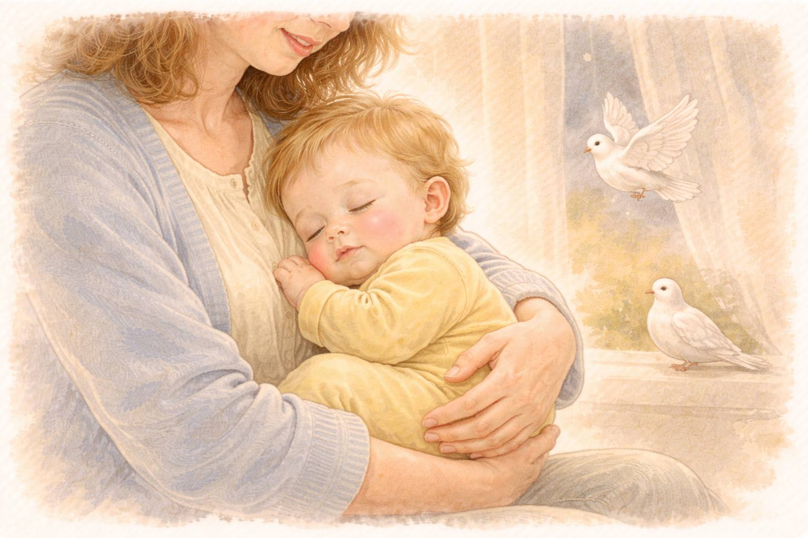
Ай люли, люли,
прилетели гули.
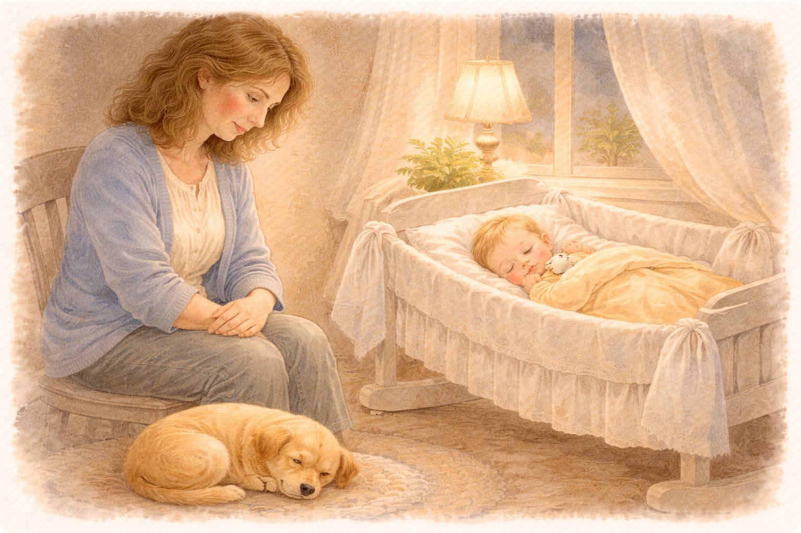
Баю-бай, баю-бай,
ты собачка не лай.